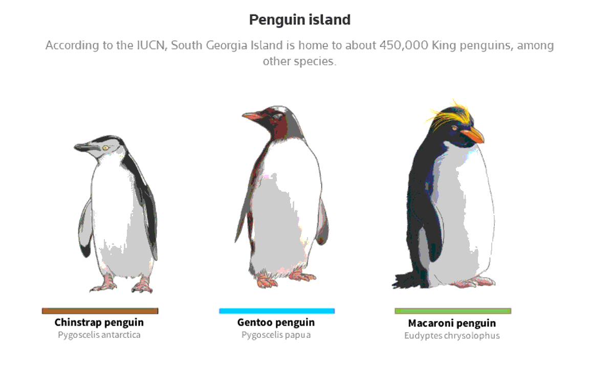
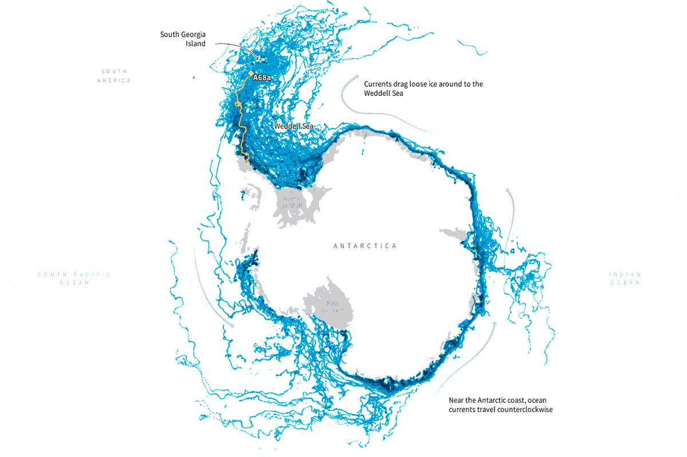
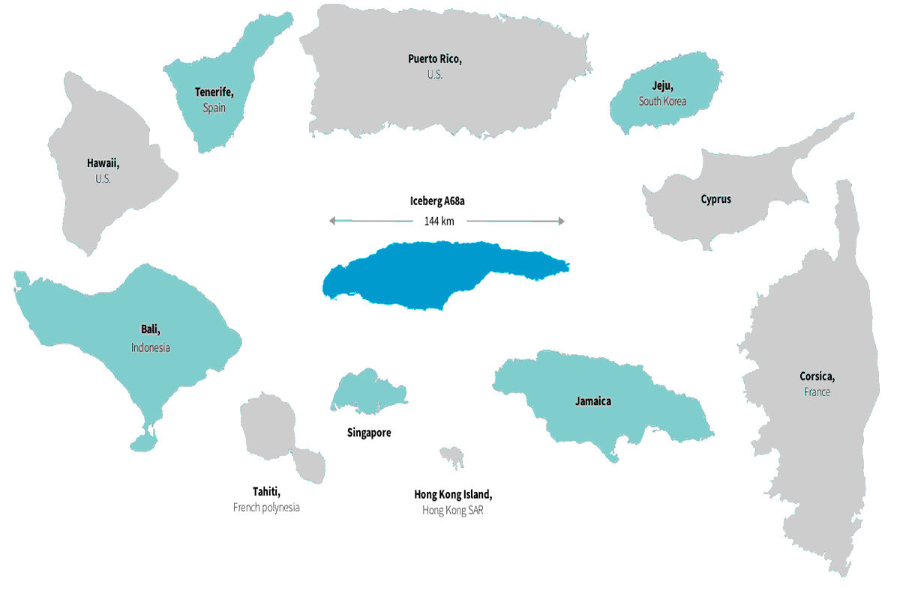
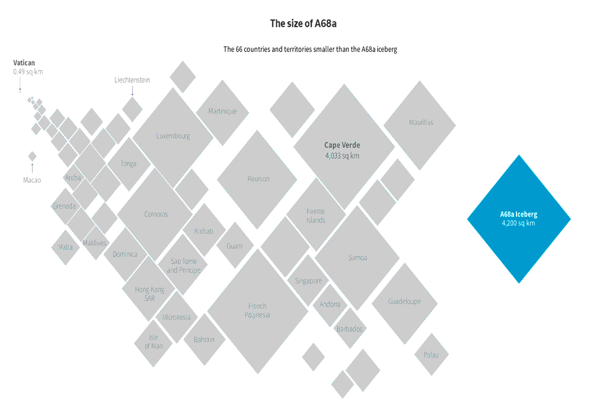
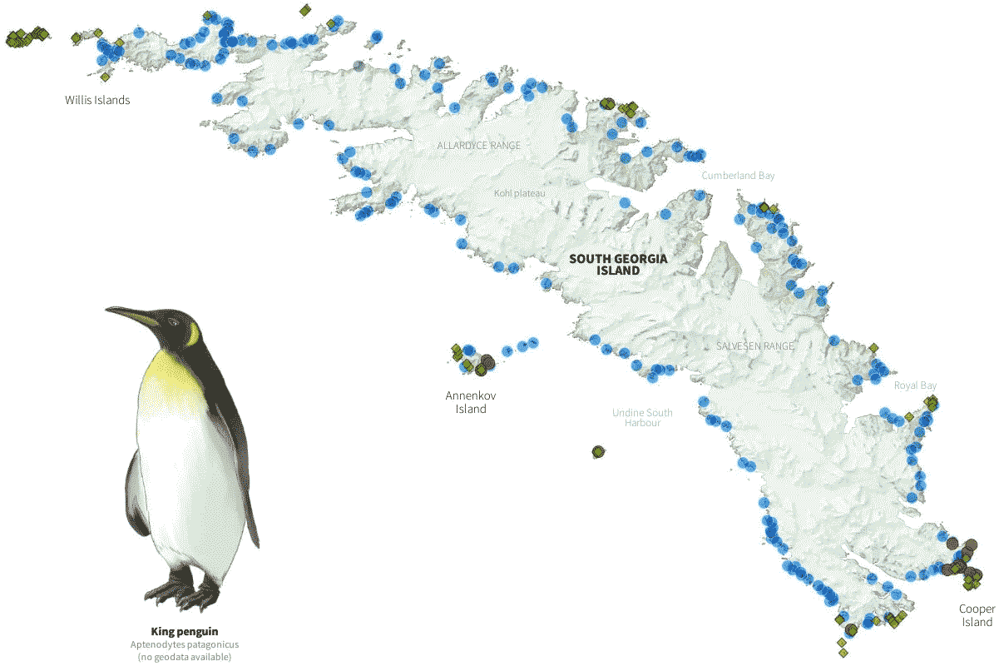
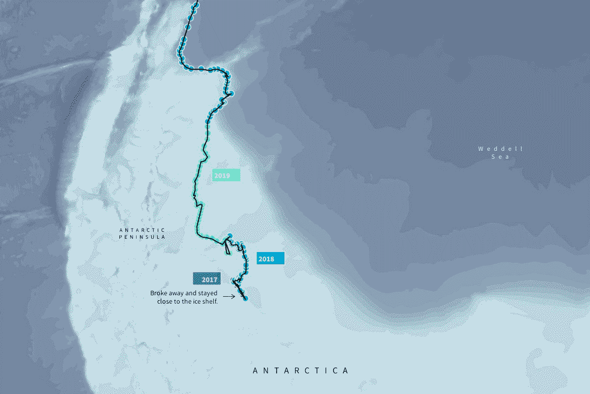

Colores
Estos colores se aplican en la infografía con un contraste de color en sí mismo.
Tipografías
KNOWLEDGE
Se utiliza en títulos.

SOURCE SANS PRO
Se utiliza en las bajadas de título.
Gráficos

GRÁFICO FIGURATIVO
Representación de una ilustración de pinguinos, identificado como gráfico figurativo.

GRÁFICO MIXTO
Mapa ilustrado figurativamente con lineas azules que trazan un mapa de conexiones no figurativo.

GRÁFICO FIGURATIVO
Representacion de los mapa de países con indicadores de color e información.

GRÁFICO NO FIGURATIVO
Presentación de triangulos que simulan el tamaño del iceberg A68a, con un gráfico de área proporcional.

GRÁFICO MIXTO
Representación de pinguino junto a una representación figurativa de un mapa con un gráfico de conexiones no figurativas.

GRÁFICO FIGURATIVO
Representación visual de la antartica y su desplazamiento de iceberg con aplicacion de color para indicar ruptura.